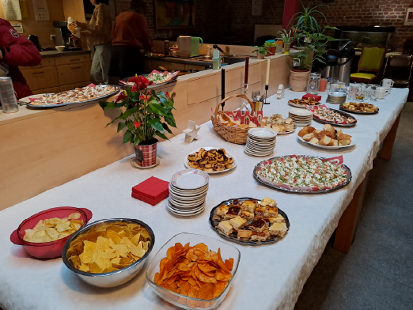
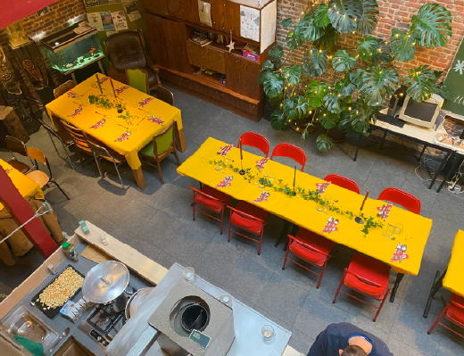
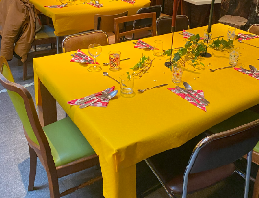

Maison de la Paix
soutient le bénévolat
conseil résidentiel pour les sans-abri à Bruxelles.

Objectifs
Maison de la Paix soutient des individus vulnérables sans domicile fixe, travail ou liens relationnels stables, y compris les sans-abri et les personnes en situation de logement instable, avec un accompagnement pour des parcours résidentiels et la réintégration.
LIRE PLUS



Historique
Maison de la Paix, créée en 1991 en tant que foyer d'accueil pour les sans-abri, a évolué vers un centre reconnu d'accompagnement à domicile et opère de manière autonome depuis 2023.
LIRE PLUS